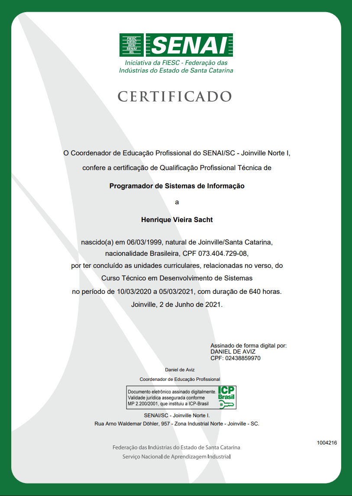

Estudante de Análise e Desenvolvimento de Sistemas em transição para a área de tecnologia
Ver ProjetosEstudante de Análise e Desenvolvimento de Sistemas (TADS) na UniSociesc, com formação técnica em Desenvolvimento de Sistemas e Eletrotécnica. Em transição para a área de tecnologia, busco consolidar conhecimentos acadêmicos em análise de sistemas, gestão de banco de dados e redes.
Objetivos: Conciliar os estudos com experiência prática em projetos, contribuir ativamente em equipes de tecnologia e me especializar em Banco de Dados e Infraestrutura de Redes.
UniSociesc (Em andamento - 4º Semestre)
Ensino Técnico
Ensino Técnico
BySeven (Ago/2025 - Presente)
Análise e resolução de problemas em bancos de dados de clientes.
Oliar (Nov/2024 - Ago/2025)
Whirlpool

henriquesacht@hotmail.com